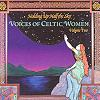

Celtic Lyrics Corner > Compilations > Voices Of Celtic Women 2 > The Low Low Lands Of Holland
|  | The Low Low Lands Of Holland |
| Credits : | Traditional; arranged by Reel Union |
| Appears On : | Voices Of Celtic Women 2 (compilation) |
| Language : | English |
Lyrics :
On the night that I was married
And on my marriage bed
Up came a bold sea captain
And he stood at my bed head
Saying, "Arise, arise, young wedded man
And come along with me
To the low, low lands of Holland
To fight the enemy
Now Holland is a lovely land
And on it grows fine grain
Sure it is a place of residence
For a soldier to remain
Where the sugar cane is plentiful
And the tea grows on the tree
I never had but the one __
Now he's far away from me
Said the mother to the daughter
Give off your sore lament
Oh there's men enough in Galway
For to be your heart's content"
"If there's men enough in Galway
Alas there are none for me
Since these high winds and stormy seas
Have come between my love and me"
I will wear no swaithe around my waist
Nor combs pull in my hair
No handkerchief around my neck
For to save my beauty fair
And never will I marry
Until the day I die
Since the low, low lands of Holland
Have come between my love and I